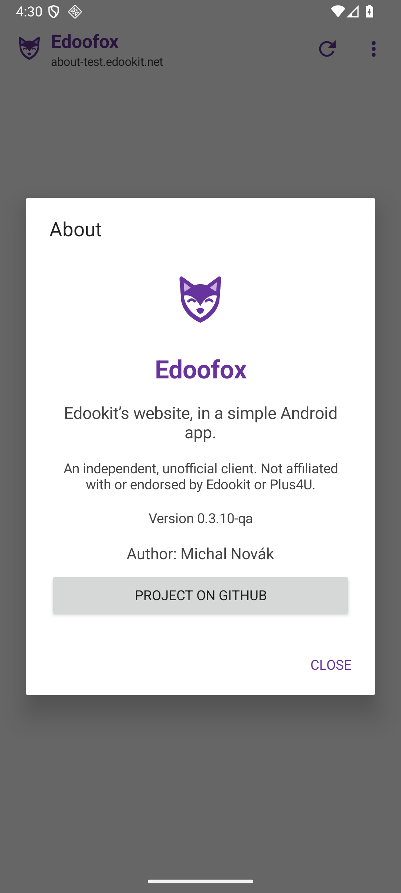

Malá aplikace pro velké školní věci
Školní Edookit.
Ve vlastní aplikaci.
Edoofox otevře web vaší školy v samostatné aplikaci pro Android. Zprávy, rozvrh i další školní věci tak mají své místo — bez nutnosti povolit dítěti celý prohlížeč.
Pro Android 8.0 a novější · Zdarma · Mimo Google Play
Proč liška?
Protože rozvrh nepotřebuje celý internet.
Rodič někdy chce říct „ano“ školním zprávám, ale ne automaticky celému prohlížeči. Edoofox dává školnímu webu vlastní aplikaci, jejíž dostupnost lze zkusit spravovat stejně jako u jiných aplikací v Google Family Link.
Důležité: Edoofox s Family Link přímo nespolupracuje a rodičovskou kontrolu nezaručuje. Instalace i nastavení závisí na vašem zařízení. Odkazy a soubory se mohou otevřít v jiných aplikacích.
Jednoduše a bez dalších účtů
Vaše škola, vaše přihlášení.
Vyberete školu a přihlásíte se na její stránce pomocí e-mailu a hesla Plus4U. Edoofox neprovozuje vlastní účet ani server pro školní data.
Přihlášení přes Google, Microsoft, Apple a +4U Access zatím aplikace nepodporuje.

Začínáme
Tři kroky a jste ve škole.
Instalace probíhá přímo z GitHubu, ne z obchodu Google Play.
- Na stránce vydání stáhněte soubor edoofox-…-release.apk.
- Otevřete jej v telefonu a případně povolte instalaci z tohoto zdroje.
- Vyberte svou školu a přihlaste se údaji Plus4U.